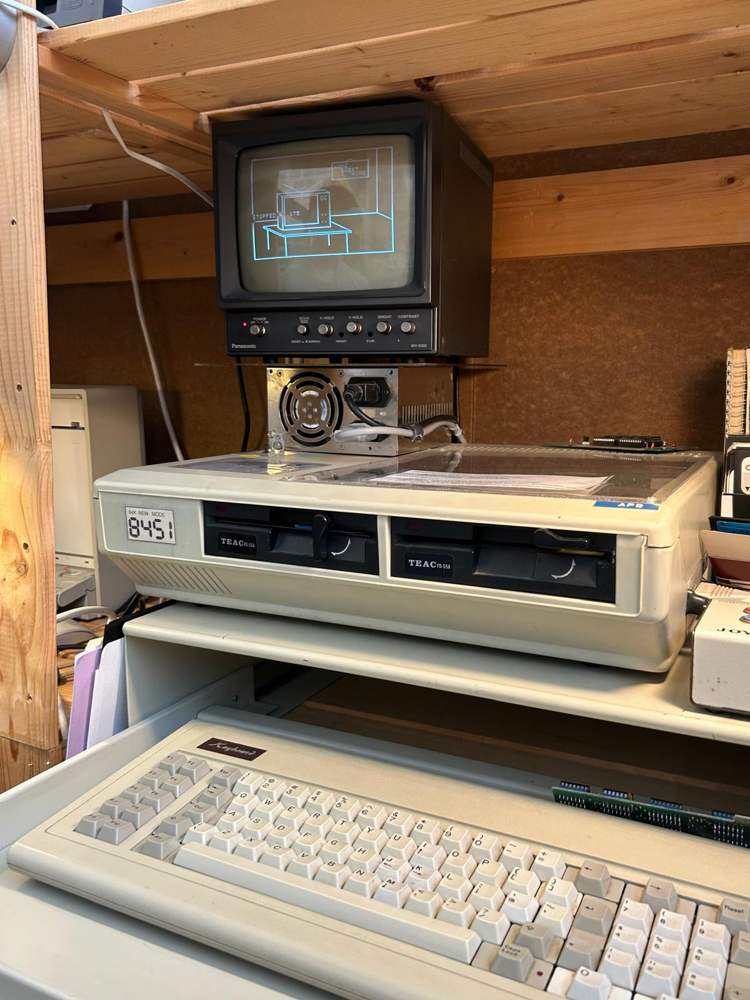

Apple Computer
Homecomputer
1977
Der Apple II wurde ab 1979 durch den Apple II Plus und später durch weiterentwickelte Modelle wie den Apple IIe abgelöst.
Der Apple II wurde hauptsächlich zum Spielen, Programmieren (vor allem in BASIC), für den Informatik-Unterricht sowie später auch für einfache Büroanwendungen genutzt.
Man kann in der Interface den Befehl "run applevision" ausführen um ein kleines cooles Programm zu starten.
Der Apple II war einer der ersten sehr erfolgreichen Personal Computer weltweit und wurde von Steve Wozniak entwickelt. Er basierte auf einem 8-Bit-Prozessor vom Typ MOS 6502, unterstützte für 1977 fortschrittliche Farb-Grafik und verfügte über eine offene Architektur mit Erweiterungssteckplätzen. Zudem war er auch als günstigere „board-only“-Version für 798 USD erhältlich, bei der nur die Hauptplatine ohne Gehäuse, Tastatur, Netzteil und Game-Paddles verkauft wurde. Der Apple II wurde in verschiedenen Varianten bis Anfang der 1990er-Jahre weiterproduziert. Dieser befindet sich aber nicht im originalen Gehäuse.